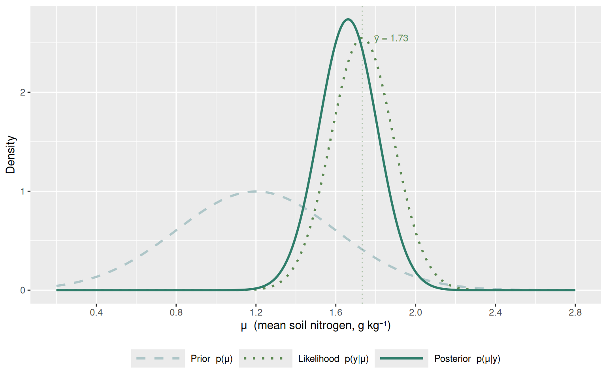
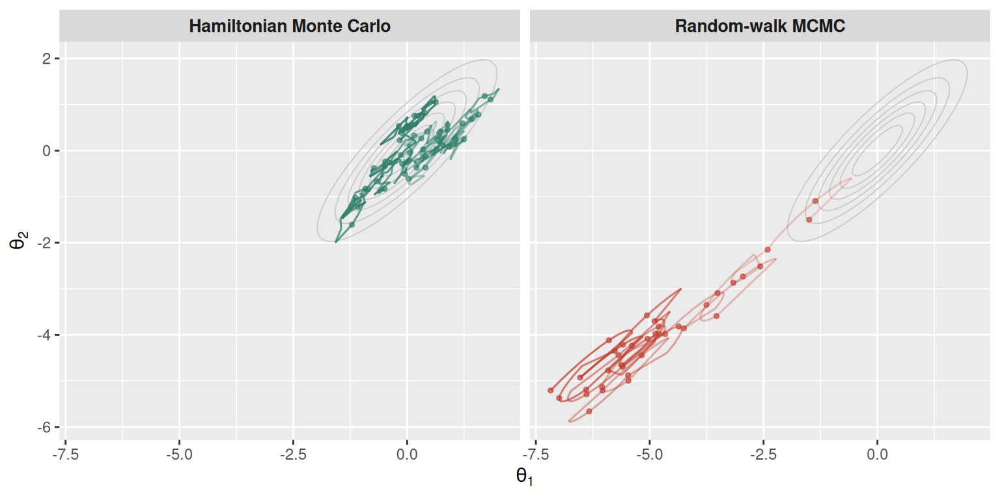

This chapter builds the conceptual foundation for everything that follows. Before touching Stan again, you need a working mental model of three ideas: the likelihood, the prior, and the posterior. You also need to understand how they combine through Bayes’ theorem. And finally, you need an intuition for what Markov chain Monte Carlo (MCMC) is doing when Stan runs.
None of this requires measure theory or a probability textbook. The goal is a set of pictures and metaphors that make the Stan output in later chapters feel interpretable, not mysterious.
3.2 Learning objectives
By the end of this chapter you will be able to:
State Bayes’ theorem in words and explain what each term means.
Distinguish the likelihood, the prior, and the posterior, and describe how each one changes as data accumulate.
Explain intuitively what MCMC does and why we use samples rather than closed-form solutions.
Describe three types of prior (flat, weakly informative, strongly informative) and give a reason to prefer each.
3.3 A running example: soil nitrogen
Throughout this chapter we use a concrete, agronomic example. Suppose you are measuring total nitrogen concentration (g kg⁻¹) in topsoil samples from a fallow plot in the forest-savanna transition zone of Côte d’Ivoire. You have a prior belief about nitrogen levels from the literature, you collect a small number of samples, and you want to update your knowledge.
This is the Bayesian problem in miniature: combining what you knew before with what the data show.
3.4 Bayes’ theorem
Bayes’ theorem is a statement about conditional probability. In the context of statistical modelling it reads:
where \(\theta\) is the parameter (or vector of parameters) you want to learn, and \(y\) is the data you observed. The \(\propto\) symbol means “proportional to”. For informed reader, not that we drop the normalising constant \(p(y)\) (the marginal likelihood) because Stan never needs to compute it.
To gain a clear and in-depth understanding of the derivation of this formula, I highly recommend the Modern Probability Modeling course by Carlisle Rainey. It is one of my favorite resources on the subject.
Now let us unpack each term.
3.4.1 The prior: \(p(\theta)\)
The prior encodes what you believe about \(\theta\)before seeing the data. It is a probability distribution over all plausible values of \(\theta\).
For our nitrogen example we can draw on measured values from the literature. In mid-west Côte d’Ivoire, Yao et al. (2010) reported topsoil (0-10 cm) total nitrogen concentrations ranging from roughly 0.7 g kg⁻¹ in degraded cropland to around 1.6 g kg⁻¹ under secondary forest across several land use types. In the forest-savanna transition zone of central Côte d’Ivoire, Ilboudo et al. (2022) measured total nitrogen across 160 sites (0-20 cm) under different land uses, with values consistent with that range under natural vegetation. A comparable study in the forest-savanna transition of Cameroon found topsoil N of 1.6-2.5 g kg⁻¹ in native and fallow lands at 0-10 cm depth (Djouama et al. 2024). Taken together, these studies suggest that in undisturbed or fallow plots of the West African forest-savanna mosaic, mean topsoil N values of approximately 1.0-1.8 g kg⁻¹ are plausible, with cropped and degraded soils falling below 1.0 g kg⁻¹.
For a fallow plot in this system, a reasonable prior might therefore be:
\[
\mu \sim \text{Normal}(1.2, 0.4)
\]
This places 95% prior probability between 0.4 and 2.0 g kg⁻¹, ruling out values below zero or above 3 g kg⁻¹ as implausible, while remaining consistent with the range documented in the literature. The centre of 1.2 is conservative which is appropriate for a mixed fallow-forest landscape rather than claiming certainty about the exact habitat type.
A prior is not a guess, It is a distribution. That is a full description of your uncertainty before the experiment. A prior centred at 1.2 with a wide standard deviation expresses much less certainty than one centred at 1.2 with a narrow standard deviation. Both say the same thing about the centre; they say very different things about how much you trust it.
3.4.2 The likelihood: \(p(y \mid \theta)\)
The likelihood measures how probable the data are, given a particular value of \(\theta\). It is not a probability distribution over \(\theta\), it is a function of \(\theta\) that scores how well each candidate value of \(\theta\) explains the data you actually observed.
If we assume nitrogen measurements are approximately normally distributed, the likelihood for a single observation \(y_i\) given mean \(\mu\) and standard deviation \(\sigma\) is:
In practice, and in Stan, we work with the log likelihood because products of small numbers underflow numerically (I recommend a rapid check of the excellent explanation of Rainey’s course chapter on ML).
3.4.3 The posterior: \(p(\theta \mid y)\)
The posterior is what you believe about \(\theta\)after seeing the data. It combines the prior (what you knew) with the likelihood (what the data say) into an updated distribution.
The posterior is the answer to your inferential question. Every credible interval, every probability statement, every prediction in this handbook comes from the posterior.
3.5 Updating in pictures
The best way to feel Bayes’ theorem is to watch the posterior shift as data arrive. Figure 3.1 shows three snapshots: the prior alone, the likelihood from five observations, and the resulting posterior.
Code
library(ggplot2)# Prior: Normal(1.2, 0.4)prior_mu<-1.2prior_sd<-0.4# Observed data (5 nitrogen measurements, g/kg)set.seed(42)y_obs<-rnorm(5, mean =1.6, sd =0.3)n<-length(y_obs)# Known sigma for simplicity (we will relax this in Chapter 4)sigma<-0.35# Conjugate posterior for Normal-Normal model# posterior mean and sd (known sigma case)post_var<-1/(1/prior_sd^2+n/sigma^2)post_sd<-sqrt(post_var)post_mu<-post_var*(prior_mu/prior_sd^2+sum(y_obs)/sigma^2)# Likelihood: proportional to Normal(ybar, sigma/sqrt(n))lik_mu<-mean(y_obs)lik_sd<-sigma/sqrt(n)mu_grid<-seq(0.2, 2.8, length.out =500)df<-data.frame( mu =rep(mu_grid, 3), density =c(dnorm(mu_grid, prior_mu, prior_sd),dnorm(mu_grid, lik_mu, lik_sd),dnorm(mu_grid, post_mu, post_sd)), component =rep(c("Prior p(μ)","Likelihood p(y|μ)","Posterior p(μ|y)"), each =length(mu_grid)))df$component<-factor(df$component, levels =c("Prior p(μ)", "Likelihood p(y|μ)", "Posterior p(μ|y)"))cols<-c("Prior p(μ)"="#aec6c8","Likelihood p(y|μ)"="#5c8a52","Posterior p(μ|y)"="#2e7d6a")ltys<-c("Prior p(μ)"="dashed","Likelihood p(y|μ)"="dotted","Posterior p(μ|y)"="solid")ggplot(df, aes(mu, density, colour =component, linetype =component))+geom_line(linewidth =1.0)+geom_vline(xintercept =mean(y_obs), colour ="#5c8a52", linetype ="dotted", alpha =0.4)+annotate("text", x =mean(y_obs)+0.06, y =2.55, label =paste0("ȳ = ", round(mean(y_obs), 2)), colour ="#5c8a52", size =3.2, hjust =0)+scale_colour_manual(values =cols, name =NULL)+scale_linetype_manual(values =ltys, name =NULL)+scale_x_continuous(breaks =seq(0.4, 2.8, by =0.4))+labs( x ="μ (mean soil nitrogen, g kg⁻¹)", y ="Density")+theme( legend.position ="bottom", legend.direction ="horizontal", legend.text =element_text(size =9), legend.key.width =unit(1.8, "cm"))

Figure 3.1: Bayesian updating for soil nitrogen. The prior (dashed) encodes pre-experiment knowledge. The likelihood (dotted) summarises the information in five measurements. The posterior (solid) is their product, renormalised. As data accumulate, the posterior narrows and shifts toward the data.
The posterior lies between the prior and the likelihood. It is a weighted average, with the weights determined by relative precision.
The posterior is narrower than either the prior or the likelihood alone, combining two sources of information reduces uncertainty.
When the data (\(\bar{y} \approx\) 1.73) disagree with the prior centre (1.2), the posterior is pulled toward the data, because five measurements carry more information than a vague prior.
3.5.1 What happens as data accumulate?
Figure 3.2 shows the posterior after 1, 5, and 20 observations from the same generating process. As \(N\) grows, the prior is overwhelmed and the posterior converges on the data-generating mean.
Figure 3.2: Sequential Bayesian updating. Each new observation sharpens the posterior. With 20 observations the prior is nearly irrelevant and the posterior is tightly concentrated around the sample mean.
3.6 Choosing a prior
Perhaps no aspect of Bayesian analysis generates more anxiety, and more unnecessary debate, than prior choice. Here is a practical framework.
3.6.1 Flat (uninformative) priors
A flat prior assigns equal density to all values of \(\theta\):
\[
p(\theta) \propto 1
\]
This sounds appealing, “let the data speak”, but flat priors are often problematic in practice:
On bounded parameters (like \(\sigma > 0\)), a flat prior puts infinite mass near zero, which can cause sampling difficulties.
In hierarchical models, flat priors on variance components can lead to improper posteriors.
“Flat” is not scale-invariant: a flat prior on \(\sigma\) is not flat on \(\log \sigma\).
Flat priors are rarely the right choice. Use them only when you genuinely have no information and you have verified the posterior is proper.
3.6.2 Weakly informative priors
A weakly informative prior rules out values that are physically or biologically implausible, without strongly favouring any particular value in the plausible range:
These are the workhorses of applied Bayesian modelling and the defaults in this handbook. The Normal(0, 10) prior for a mean says: “I don’t think the mean is outside the range (-20, 20), but within that range I have little preference.” The Exponential(1) prior for a standard deviation says: “Values near zero are unlikely; moderate values are plausible; very large values are increasingly surprising.”
A useful heuristic: before fitting, ask yourself “what is the largest effect I could plausibly see in this system?” Set your prior so that this value lies somewhere in the 95% interval. If the largest plausible nitrogen difference between treatments is 1.5 g kg⁻¹, a Normal(0, 1) prior on a treatment effect (95% interval: -1.96, +1.96) is weakly informative.
3.6.3 Strongly informative priors
When you have reliable external knowledge such as a well-studied system, a meta-analysis, replicated prior experiments, you can use an informative prior to incorporate that knowledge explicitly:
\[
\mu \sim \text{Normal}(1.2, 0.2)
\]
Strongly informative priors improve estimates when data are scarce. They also make your assumptions transparent: instead of hiding prior knowledge in a subjective choice of model structure, you state it as a distribution that can be inspected and challenged.
Figure 3.3 shows the three prior families for a mean parameter.
Figure 3.3: Three prior types for a location parameter. The flat prior (dashed, truncated for display) gives equal weight to implausible values. The weakly informative prior rules out extremes without strong commitment. The strongly informative prior encodes precise external knowledge.
3.7 What MCMC is doing
For any realistically complex model, the posterior \(p(\theta \mid y)\) cannot be computed analytically: the normalising constant \(p(y)\) involves an integral over all possible values of \(\theta\), which is intractable in more than a few dimensions. Instead, Stan uses Markov chain Monte Carlo (MCMC) to sample from the posterior without ever computing it directly.
3.7.1 The core idea
Imagine the posterior as a landscape, where height represents probability density. The goal is to draw a map of this landscape by visiting locations in proportion to their height with spending more time in high-probability regions, less time in low-probability ones.
MCMC builds a Markov chain, a sequence of parameter values \(\theta^{(1)}, \theta^{(2)}, \ldots, \theta^{(S)}\), that, after a warmup period, visits each region of the parameter space in proportion to the posterior density. The resulting collection of draws is a sample from the posterior.
From this sample you can compute any posterior summary:
A 90% credible interval is simply the interval from the 5th to the 95th percentile of \(\{\theta^{(s)}\}\).
3.7.2 Why Stan’s MCMC is especially good
Classic MCMC algorithms (Gibbs sampling, used by JAGS and BUGS) propose new parameter values by taking random steps. In high-dimensional or strongly-correlated posteriors, most random steps are rejected. This is due to the fact that the chain mixes slowly and you need millions of iterations to get reliable estimates.
Rather, stan uses Hamiltonian Monte Carlo (HMC), which borrows an analogy from physics. It treats the negative log posterior as a potential energy surface and simulates the trajectory of a particle with momentum rolling across that surface. The particle moves efficiently through curved, high-dimensional posteriors that would defeat a random-walk sampler (Betancourt 2017).
The specific variant Stan uses, the No-U-Turn Sampler (NUTS), also automatically tunes the step size and trajectory length during warmup, so you rarely need to touch these settings manually.
Figure 3.4 illustrates the difference in exploration efficiency between a slow random-walk chain and an efficient HMC path.

Figure 3.4: Schematic comparison of Hamiltonian Monte Carlo (left) and random-walk MCMC (right) on a correlated bivariate posterior. The random walk takes many small, mostly rejected steps. HMC follows smooth trajectories that traverse the posterior efficiently.
3.7.3 Warmup and sampling phases
Stan’s sampler runs in two phases:
Warmup (iter_warmup, default 1000): the chain explores the posterior and automatically tunes its step size and mass matrix. Warmup draws are discarded, they are not part of your posterior sample.
Sampling (iter_sampling, default 1000): the tuned chain draws samples that are retained for inference.
With four chains, the default settings give \(4 \times 1000 = 4000\) posterior draws which are usually more than enough for well-behaved models.
3.7.4 Multiple chains
Stan runs several chains (typically four) starting from different random initial values. If all chains converge to the same region of the posterior, that is strong evidence of a valid result. The \(\hat{R}\) statistic measures this agreement: values close to 1.00 indicate that between-chain variance equals within-chain variance, as expected when all chains explore the same distribution (Vehtari et al. 2021).
3.8 From posterior draws to answers
Once you have posterior draws, every inferential question is a calculation:
Table 3.1: Translating questions into posterior calculations.
Inferential question
R calculation on draws
What is the most likely value of μ?
median(draws$mu)
How uncertain am I about μ?
sd(draws$mu)
What is the 90% credible interval for μ?
quantile(draws$mu, c(0.05, 0.95))
P(μ > 1.5)?
mean(draws$mu > 1.5)
What will a new observation look like?
draws$y_rep (from generated quantities)
This is the practical payoff of Bayesian inference: answers to questions that matter for decision-making, expressed as probabilities rather than binary hypothesis tests.
3.9 The Bayesian workflow
Before closing, it helps to see how the three concepts discussed here (prior, likelihood, posterior) fit into a complete analysis cycle (Figure 3.5). This cycle recurs in every chapter of this handbook.
flowchart LR
A("🔬 Scientific\nquestion"):::question
B("📐 Prior\np(θ)"):::prior
C("📊 Likelihood\np(y | θ)"):::likelihood
D("🔍 Prior predictive\ncheck"):::check
E("✅ Posterior\np(θ | y)"):::posterior
F("🔄 Posterior predictive\ncheck"):::check
A -->|"encode\nbeliefs"| B
B -->|"simulate\ndata"| D
B -->|"× data"| E
C -->|"× prior"| E
A -->|"choose\nmodel"| C
E -->|"simulate\nnew data"| F
F -->|"refine\nmodel"| A
classDef question fill:#e8f4f2,stroke:#2e7d6a,color:#1a2e28,font-weight:bold
classDef prior fill:#aec6c8,stroke:#2e7d6a,color:#1a2e28,font-weight:bold
classDef likelihood fill:#5c8a52,stroke:#3a6035,color:#ffffff,font-weight:bold
classDef posterior fill:#2e7d6a,stroke:#1a4a40,color:#ffffff,font-weight:bold
classDef check fill:#f5f0e8,stroke:#b8860b,color:#3a2e00,font-weight:bold
Figure 3.5: The Bayesian modelling workflow. Arrows show the flow from scientific question to posterior and back. Prior predictive checks (Chapter 13) and posterior predictive checks (Chapters 4-12) close the loop.
3.10 Summary
Bayes’ theorem combines the prior \(p(\theta)\) and the likelihood \(p(y \mid \theta)\) into the posterior \(p(\theta \mid y)\). The posterior is proportional to their product.
The prior encodes pre-experiment knowledge as a distribution over parameters. Weakly informative priors are the practical default: they rule out implausible values without dominating the data.
The likelihood scores how probable the observed data are under each candidate parameter value. It is a function of \(\theta\), not a distribution over \(\theta\).
The posterior narrows and shifts toward the data as observations accumulate. With enough data, the prior is overwhelmed.
MCMC draws samples from the posterior without computing it directly. Stan uses Hamiltonian Monte Carlo, which is efficient in high dimensions. Multiple chains and the \(\hat{R}\) diagnostic provide convergence assurance.
Every posterior quantity (mean, interval, probability statement, prediction) is a simple calculation on the sample of draws.
3.11 Exercises
Prior sensitivity. Using the conjugate normal model from Chapter 2, fit the same data three times with: (a) Normal(0, 10), (b) Normal(0, 0.5), and (c) Normal(5, 0.2) as the prior on mu. For each fit, extract the posterior mean and 90% credible interval. How much does the prior influence the posterior? At what sample size does the influence disappear?
Posterior probabilities. Fit the nitrogen model from this chapter (or any normal model). Using the posterior draws, compute:
the posterior probability that a new observation will exceed 2.5. Write the one-line R code for each.
Prior predictive simulation. Before fitting, draw 1 000 values of \(\mu\) from Normal(1.2, 0.4) and \(\sigma\) from Exponential(1). For each pair \((\mu, \sigma)\), draw one observation from Normal(mu, sigma). Plot the resulting distribution of synthetic observations. Does the prior imply any nitrogen values you would consider physically implausible? Adjust the prior and repeat. (We will formalise this as prior predictive checks in Chapter 13.)
Credible interval vs confidence interval. A 95% Bayesian credible interval \([a, b]\) means: “Given the data and the prior, there is a 95% probability that \(\theta\) lies in \([a, b]\).” A frequentist 95% confidence interval means something subtly different. Write one or two sentences explaining the difference in plain language. Which interpretation is more useful for an agronomist making a management decision?
3.12 Further reading
McElreath (2020, Ch. 2-3): the best intuitive treatment of Bayes’ theorem for life scientists, using grid approximation to build visual understanding before MCMC.
Gelman et al. (2013, Ch. 1-2): the authoritative technical treatment; skim Ch. 1 for perspective and Ch. 2 for the conjugate normal model worked out in full.
Betancourt (2017): if you want to understand why HMC works, §2-3 give a geometric intuition without requiring physics background.
Vehtari et al. (2021): the definitive reference for \(\hat{R}\) and ESS; explains why the older \(\hat{R}\) was subtly flawed and what the rank-normalised version fixes.
Betancourt, Michael. 2017. “A Conceptual Introduction to Hamiltonian Monte Carlo.”arXiv Preprint arXiv:1701.02434.
Djouama, T. et al. 2024. “Variability of Soil Organic Carbon and Nutrient Content Across Land Uses and Agriculturally Induced Land Use Changes in the Forest-Savanna Transition Zone of Cameroon.”Geoderma Regional. https://doi.org/10.1016/j.geodrs.2024.e00555.
Gelman, Andrew, John B Carlin, Hal S Stern, David B Dunson, Aki Vehtari, and Donald B Rubin. 2013. Bayesian Data Analysis. 3rd ed. Boca Raton, FL: CRC Press.
Ilboudo, Tegawende Léa Jeanne, Lucien NGuessan Diby, Delwendé Innocent Kiba, Tor Gunnar Vågen, Leigh Ann Winowiecki, Hassan Bismarck Nacro, Johan Six, and Emmanuel Frossard. 2022. “Relationship Between the Stocks of Carbon in Non-Cultivated Trees and Soils in a West African Forest–Savanna Transition Zone.” EGUsphere preprint. https://doi.org/10.5194/egusphere-2022-209.
McElreath, Richard. 2020. Statistical Rethinking: A Bayesian Course with Examples in R and Stan. 2nd ed. Boca Raton, FL: CRC Press.
Vehtari, Aki, Andrew Gelman, Daniel Simpson, Bob Carpenter, and Paul-Christian Bürkner. 2021. “Rank-Normalization, Folding, and Localization: An Improved \(\hat{R}\) for Assessing Convergence of MCMC.”Bayesian Analysis 16 (2): 667–718. https://doi.org/10.1214/20-BA1221.
Yao, Michel K., Pascal K. T. Angui, Souleymane Konaté, Jérôme E. Tondoh, Yao Tano, Luc Abbadie, and D. Bernest. 2010. “Effects of Land Use Types on Soil Organic Carbon and Nitrogen Dynamics in Mid-WestCôte d’Ivoire.”European Journal of Scientific Research 40 (2): 211–22.